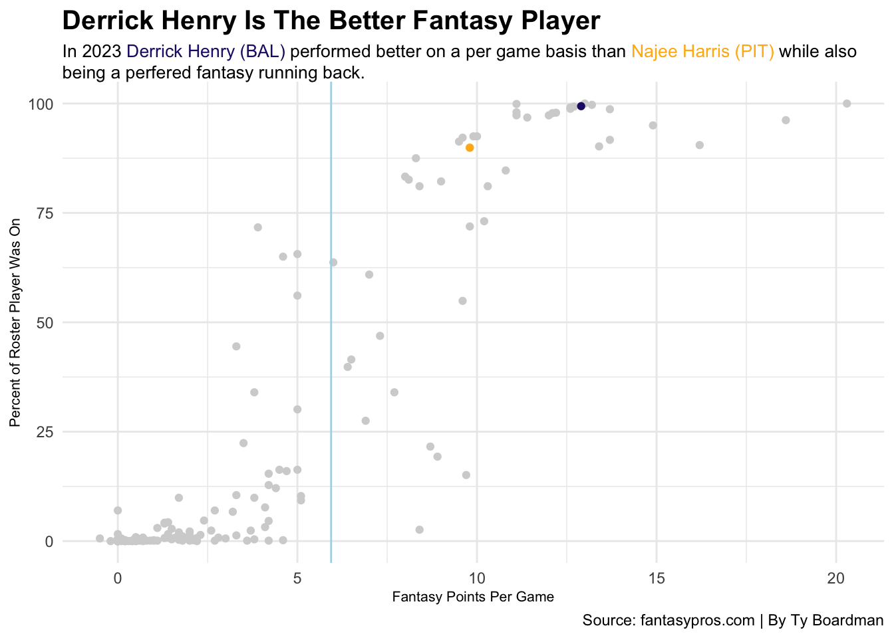
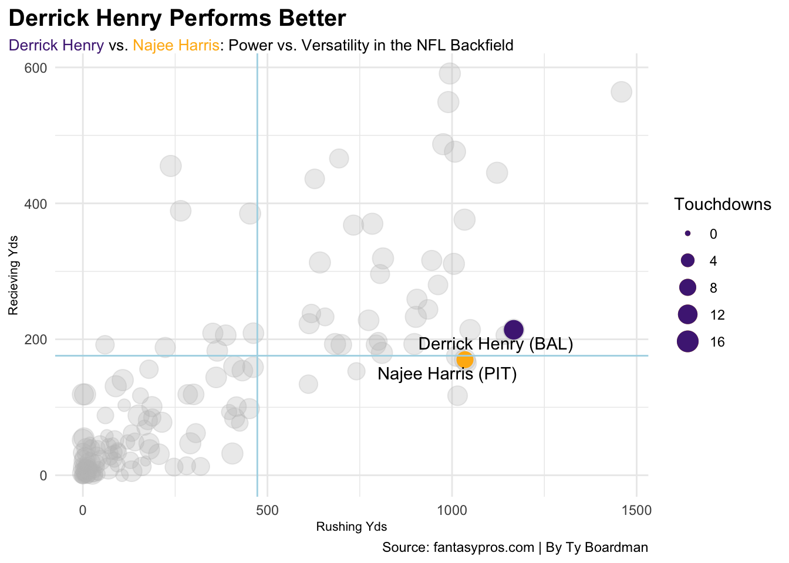
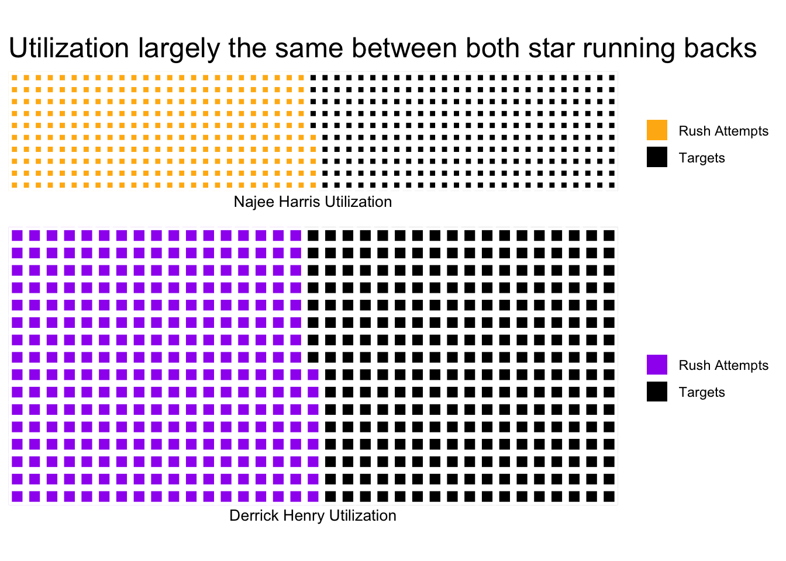

library(tidyverse)---
title: "Steelers Defense over the years"
author: "Ty Boardman"
date: '2024-11-05'
categories: [Steelers, Najee, Fantasy, Ravens]
image: "image.png"
format:
html:
code-fold: true
---Steelers Running back Najee Harris vs Ravens Running back Derrick Henry in 2023
runback23 <- read_csv("posts/Steelers/runback23.csv") Rows: 222 Columns: 18
── Column specification ────────────────────────────────────────────────────────
Delimiter: ","
chr (1): player
dbl (17): rank, att, yds, y_a, lg, x20, td, rec, tgt, rec_yds, y_r, rec_tds,...
ℹ Use `spec()` to retrieve the full column specification for this data.
ℹ Specify the column types or set `show_col_types = FALSE` to quiet this message.glimpse(runback23)Rows: 222
Columns: 18
$ rank <dbl> 1, 2, 3, 4, 5, 6, 7, 8, 9, 10, 11, 12, 13, 14, 15, 16, 17, 18,…
$ player <chr> "Christian McCaffrey (SF)", "Raheem Mostert (MIA)", "Travis Et…
$ att <dbl> 272, 209, 267, 228, 280, 257, 223, 272, 219, 182, 237, 214, 24…
$ yds <dbl> 1459, 1012, 1008, 1144, 1167, 1034, 994, 990, 1015, 945, 1122,…
$ y_a <dbl> 5.4, 4.8, 3.8, 5.0, 4.2, 4.0, 4.5, 3.6, 4.6, 5.2, 4.7, 4.6, 3.…
$ lg <dbl> 72, 49, 62, 56, 69, 44, 83, 38, 75, 36, 42, 38, 36, 42, 44, 45…
$ x20 <dbl> 19, 12, 11, 11, 11, 5, 19, 5, 9, 14, 10, 9, 12, 8, 14, 11, 11,…
$ td <dbl> 14, 18, 11, 12, 12, 9, 5, 6, 13, 10, 2, 4, 6, 13, 7, 8, 7, 6, …
$ rec <dbl> 67, 25, 58, 32, 28, 52, 76, 64, 16, 52, 44, 58, 41, 12, 27, 29…
$ tgt <dbl> 83, 32, 73, 48, 36, 64, 95, 70, 24, 71, 54, 86, 60, 13, 33, 37…
$ rec_yds <dbl> 564, 175, 476, 206, 214, 376, 591, 549, 117, 316, 445, 487, 28…
$ y_r <dbl> 8.4, 7.0, 8.2, 6.4, 7.6, 7.2, 7.8, 8.6, 7.3, 6.1, 10.1, 8.4, 6…
$ rec_tds <dbl> 7, 3, 1, 3, 0, 3, 4, 3, 0, 1, 4, 4, 4, 0, 2, 1, 2, 0, 5, 0, 3,…
$ fl <dbl> 2, 1, 0, 2, 0, 0, 0, 2, 1, 1, 2, 3, 2, 2, 0, 0, 1, 1, 1, 1, 1,…
$ g <dbl> 16, 15, 17, 12, 17, 17, 17, 17, 14, 15, 17, 17, 14, 17, 13, 15…
$ fpts <dbl> 324.3, 242.7, 224.4, 223.0, 218.7, 215.0, 214.5, 203.9, 191.2,…
$ fpts_g <dbl> 20.3, 16.2, 13.2, 18.6, 12.9, 12.6, 12.6, 12.0, 13.7, 12.7, 11…
$ rost <dbl> 100.0, 90.5, 99.7, 96.2, 99.4, 99.1, 98.8, 97.3, 91.7, 99.3, 9…library(tidyverse)
library(ggrepel)
library(ggbeeswarm)
library(ggalt)Registered S3 methods overwritten by 'ggalt':
method from
grid.draw.absoluteGrob ggplot2
grobHeight.absoluteGrob ggplot2
grobWidth.absoluteGrob ggplot2
grobX.absoluteGrob ggplot2
grobY.absoluteGrob ggplot2library(ggtext)
library(gt)
library(waffle)
nh <- runback23 |> filter(player == "Najee Harris (PIT)")
dh <- runback23 |> filter(player == "Derrick Henry (BAL)")
ggplot() +
geom_point(data=runback23, aes(x=fpts_g, y=rost), color="lightgrey") +
geom_point(data=nh, aes(x=fpts_g, y=rost), color="#FFB612") +
geom_point(data=dh, aes(x=fpts_g, y=rost), color="#241773") +
geom_vline(xintercept = 5.938298, color="lightblue") +
theme_minimal() +
labs(
title = "Derrick Henry Is The Better Fantasy Player",
x = "Fantasy Points Per Game",
y= "Percent of Roster Player Was On",
caption= "Source: fantasypros.com | By Ty Boardman",
subtitle = "In 2023 <span style = 'color:#241773;'>Derrick Henry (BAL)</span> performed better on a per game basis than <span style = 'color:#FFB612;'>Najee Harris (PIT)</span> while also being a perfered fantasy running back."
) +
theme(
plot.subtitle = element_textbox_simple(size = 10),
plot.title = element_text(size = 15, face ="bold"),
axis.title = element_text(size = 8)
)
runback23 |> filter(g > 10) |>
summarize(
averageyds = mean(yds),
averagerecyds = mean(rec_yds),
averagefantasy = mean(fpts_g)
)# A tibble: 1 × 3
averageyds averagerecyds averagefantasy
<dbl> <dbl> <dbl>
1 473. 176. 5.94nh <- runback23 |> filter(player == "Najee Harris (PIT)")
dh <- runback23 |> filter(player == "Derrick Henry (BAL)")
ggplot() +
geom_point(data=runback23, aes(x=yds, y=rec_yds, size=g), alpha=.3, color="grey") +
geom_point(data=nh, aes(x=yds, y=rec_yds, size=td), color="#FFB612") +
geom_point(data=dh, aes(x=yds, y=rec_yds, size=td), color="#4F2683") +
geom_text_repel(data=nh, aes(x=yds, y=rec_yds, label=player)) +
geom_text_repel(data=dh, aes(x=yds, y=rec_yds, label=player)) +
geom_vline(xintercept = 472.5319, color="lightblue") +
geom_hline(yintercept = 175.8511, color="lightblue") +
theme_minimal() +
labs(
title = "Derrick Henry Performs Better",
x = "Rushing Yds",
y= "Recieving Yds",
caption= "Source: fantasypros.com | By Ty Boardman",
subtitle = '<span style="color:#4F2683">Derrick Henry</span> vs. <span style="color:#FFB612">Najee Harris</span>: Power vs. Versatility in the NFL Backfield'
) +
theme(
plot.subtitle = element_textbox_simple(size = 10),
plot.title = element_text(size = 15, face ="bold"),
axis.title = element_text(size = 8),
plot.title.position = "plot"
) +
scale_size(name = "Touchdowns")
runback23 <- read_csv("posts/Steelers/runback23.csv")Rows: 222 Columns: 18
── Column specification ────────────────────────────────────────────────────────
Delimiter: ","
chr (1): player
dbl (17): rank, att, yds, y_a, lg, x20, td, rec, tgt, rec_yds, y_r, rec_tds,...
ℹ Use `spec()` to retrieve the full column specification for this data.
ℹ Specify the column types or set `show_col_types = FALSE` to quiet this message.player1 <- runback23 |> filter(player == "Najee Harris (PIT)")
player2 <- runback23 |> filter(player == "Derrick Henry (BAL)")
ajuse <- c("Rush Attempts"=player1[["att"]], "Targets"=player1[["att"]])
jjuse <- c("Rush Attempts"=player2[["att"]], "Targets"=player2[["att"]])
iron(
waffle(
ajuse,
rows=10,
xlab="Najee Harris Utilization",
title="Utilization largely the same between both star running backs",
colors = c("#FFB612", "black")
),
waffle(
jjuse,
rows=16,
xlab="Derrick Henry Utilization",
colors = c("purple", "black")
))